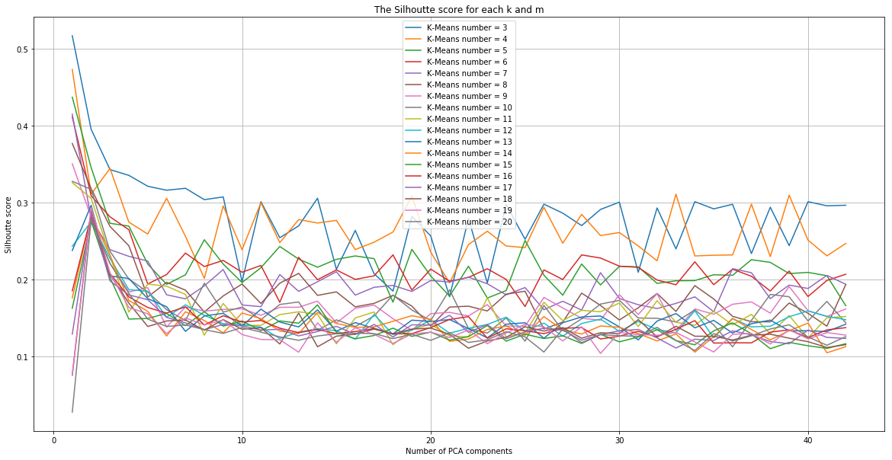
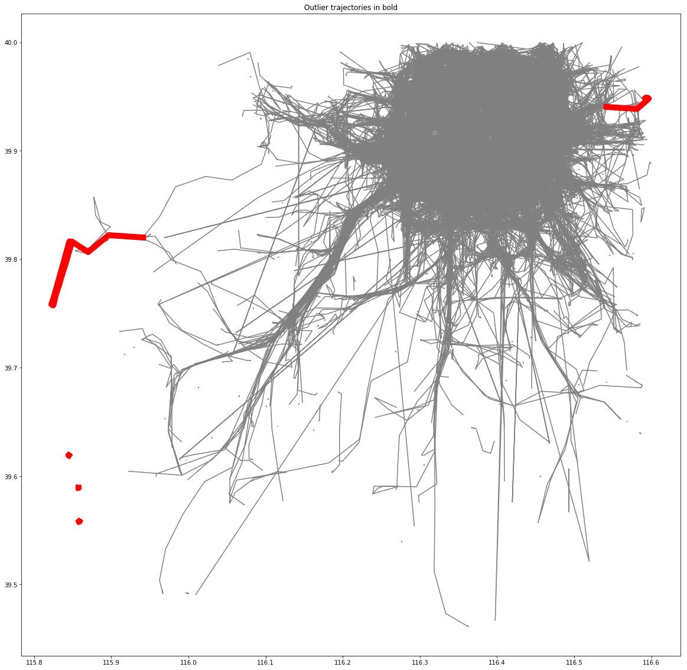

This is a case study I did as the interview for Urban Complexity Lab I later worked for. The corresponding jupyter notebook with full discussion can be found here.
Task
I. Preprocess and apply uniform timescale (linear interpolation to create checkpoints).
II. Test K-means clustering on the data with different cluster number k to find the optimal one with highest Silhoutte score.
III. Perform Gaussian Mixture clustering using this optimal cluster number, visualize the result and detect outliers with less than 0.2% likelihood.
Challenge

Acceleration
Limitation
Additionally, In this task we basicly rely on Euclidean distances to measure the similarity. However, this method strictly calculate the distance in each checkpoints. Thus it's very sensitive to noise.
Alternatives
- Partiion trajectories into sub-trajecotries, and each of them is represented by a Minimum Bounding Rectangle(MBR), which is an expression of the maximum extents of a 2-dimensional object. The query processing is then based on these MBRs, instead of scanning data elements of an entire trajectory.(Lee S, Chun S, Kim D, et al.,2000)
- Longest common sub-sequence, LCSS.(M. Vlachos, G. Kollios, and D. Gunopulos,2002)
Finally, the result of outlier detection by ranking the Gaussian Mixture Model likelihood is shown below:
